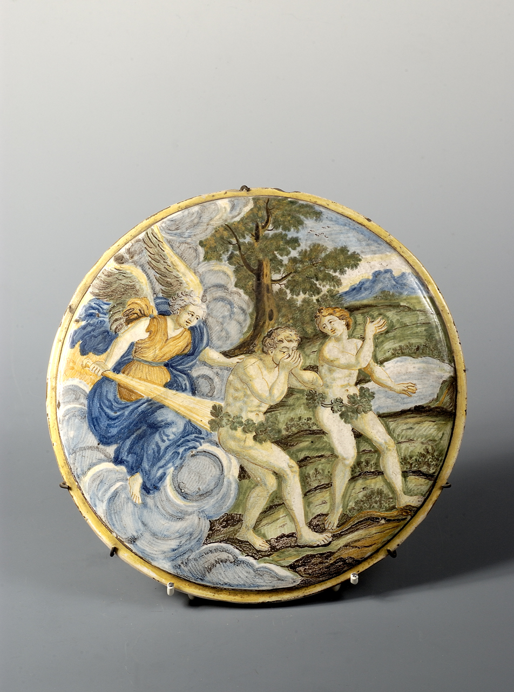

Piatto istoriato con Apollo e Dafne
Bottega Faentina, metà del XVI secolo
Piatto da pompa con la metamorfosi di Dafne in alloro, tratta dalle Metamorfosi di Ovidio; tesa decorata a grottesche su fondo blu.
- Identificativo
- OGG-0001
- Tipologia
- Ceramica
- Autore o ambito
- Bottega faentina
- Datazione
- 1520-1530 circa (XVI secolo)
- Luogo
- Faenza
- Materia e tecnica
- Maiolica dipinta in policromia
- Misure
- diametro 26 cm
- Stato di conservazione
- Buono
- Licenza
- CC BY 4.0